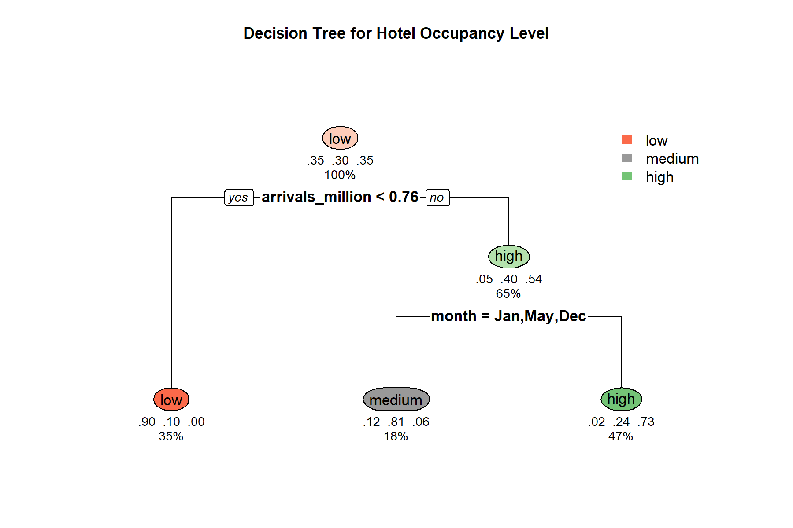
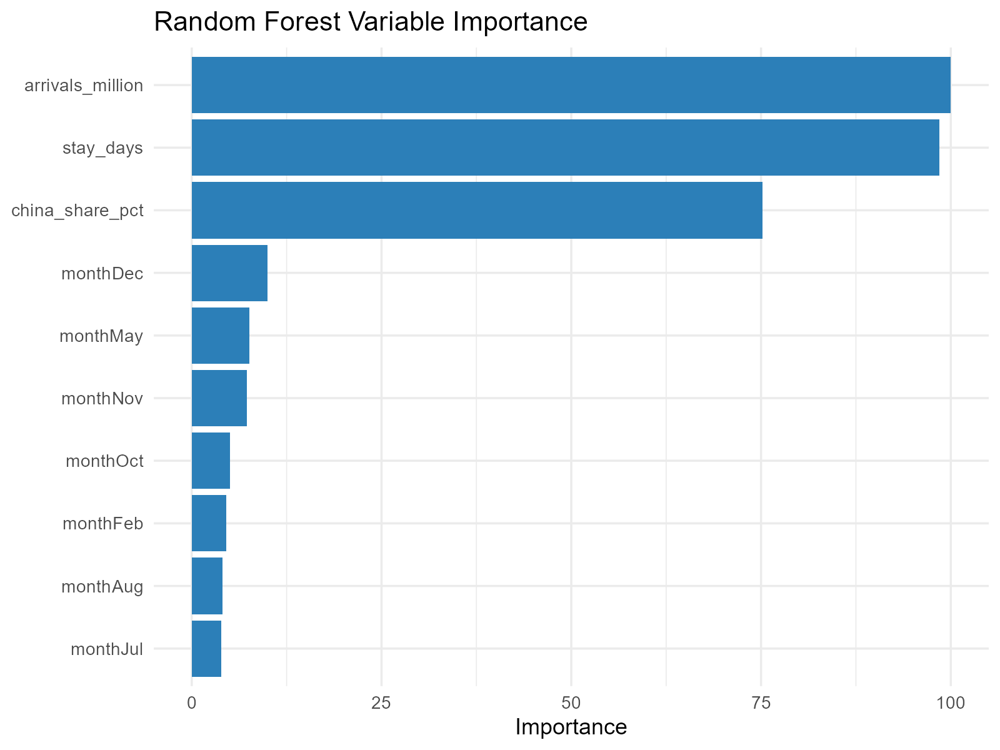

Take-home Exercise 2
Classification Tree and Random Forest Prototype
Submission Scope
This take-home exercise documents my prototype contribution for the tourism recovery visual analytics project.
The selected prototype focuses on classification tree and random forest analysis for monthly hotel occupancy classification.
The prototype covers four linked tasks:
- preparing monthly tourism data for modeling,
- building an interpretable classification tree,
- evaluating a random forest benchmark,
- packaging the outputs into a deployable Shiny application.
1. Data Preparation
Input Data
The original workbook used for my analysis has been moved into the project data area:
data/raw/Name your insight (2).xlsx
Derived datasets and exported tables are stored in:
artifacts/tables/
Preparation Logic
The preparation process follows the same workflow used in my individual prototype:
- Read monthly tourism indicators from the Excel workbook.
- Remove incomplete rows and retain valid monthly observations.
- Create calendar fields such as
year,month, andquarter. - Create the recovery-stage field
period. - Derive
china_shareandchina_share_pct. - Cap extreme stay values to stabilize modeling.
- Create occupancy classes:
lowmediumhigh
- Split the data into
trainandtest.
Scripts Used
The original scripts from my take-home work have been moved into the root project script folder:
Exported Tables
Prepared data and model-ready tables are now stored in the shared artifact location:
2. Classification Tree Prototype
Modeling Goal
The classification tree predicts the hotel occupancy category:
lowmediumhigh
using the following explanatory variables:
- visitor arrivals,
- China share,
- capped stay length,
- month.
Why This Method Fits the Project
The classification tree is useful because it provides:
- clear split rules,
- interpretable structure,
- easy classroom presentation value,
- direct comparison with the random forest model.
Core Outputs
The exported classification tree outputs have been moved into the shared artifacts structure.
Visual outputs
- artifacts/plots/decision_tree_plot.png
- artifacts/plots/decision_tree_static.png
- artifacts/plots/decision_tree_visual.html
{kind=link}
{kind=link}

Tables
Interpretation Focus
This prototype uses the tree model primarily as an interpretability-first model:
- to show which variables split the occupancy classes,
- to explain why some months are grouped into low, medium, or high occupancy,
- to provide a presentation-friendly structure before introducing the random forest.
3. Random Forest Prototype
Modeling Goal
The random forest uses the same predictors as the classification tree, but emphasizes predictive stability and stronger benchmark performance.
Why This Method Fits the Project
The random forest is used because it can:
- reduce single-tree instability,
- provide variable importance ranking,
- support model comparison against the classification tree,
- show out-of-bag performance trends.
Core Outputs
Visual outputs
- artifacts/plots/random_forest_importance.png
- artifacts/plots/random_forest_oob_accuracy.png
- artifacts/plots/random_forest_actual_vs_predicted.png
- artifacts/plots/random_forest_confusion_heatmap.png
{kind=link}
{kind=link}
{kind=link}
{kind=link}

Tables
4. Shiny Deployment
Deployment Arrangement
The final Shiny app is now deployed in the repository as a self-contained app bundle:
The app bundle keeps:
app.Rdata/outputs/README.md
together so the app can run directly after cloning the repository.
Launch Method
The repository-level startup command remains:
Rscript run_app.R 3838and it now opens the deployed final Shiny app through the root app launcher.
5. UI and Interaction Design
The deployed Shiny application includes:
- a data exploration page for trend interpretation,
- a classification tree page for interpretable rule-based explanation,
- a random forest page for predictive benchmarking,
- model comparison summaries.
Key interface features include:
- metric selection,
- date filtering,
- tree tuning controls,
- forest tuning controls,
- visual tabs,
- metric cards,
- prediction comparison charts.
6. Current Status
Completed:
- moved the take-home scripts into the shared
scripts/folder, - moved model outputs into
artifacts/plotsandartifacts/tables, - deployed the final Shiny app in the repository,
- aligned the app launch entry point with the deployed app.
This root-level structure now follows the README more closely than storing the complete work only inside team/jin-qinhao/Take-Home-Exercise2/.